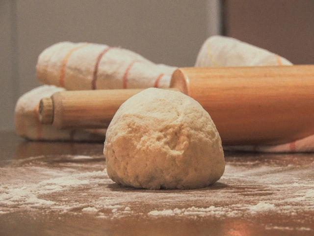

Simple Bread

Ingredients
- 2 teaspoons of dried yeast
- 2 teaspoons of sugar
- 1 - 1 1/3 cup of warm water 105℉
- 1 teaspoon of fine sea salt (alternatively, regular salt works as well)
- 3 - 3 1/2 cups of all-purpose flower
- 1 egg
Tools
- 1 Mixing Bowl
- 1 Loaf Bread Pan
Instructions
- Combine yeast, water, and sugar into a bowl
- Stir until it is dissolved
- Combine salt, flour, and egg
- Mix until the dough is rougher
- Take out of the bowl until a lightly floured surface.
- Kneed the dough for about 4-5 minutes until the dough is much firmer. It should be able to maintain a shape (here is a youtube link showing how to kneed dough for reference.)
- Shape it into a ball and place it into the bowl. Cover the bowl.
- Let the dough rise for about 1 to 1 1/2 hours.
- Take the dough out of the bowl. Shape and place it into the pan.
- Let it sit in the pan for an additional hour (make sure to cover it.)
- While this is happening, preheat the oven to 425℉. Make sure to place the rack to the lowest section.
- Once the bread has finished resting, place it into the oven for 45 minutes.
- At the end of the 45 minutes, take it out the oven and let it sit for 15 - 30 minutes.
- You should now be able to cut the bread and consume!
Go back to Main!